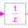
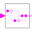

NonPeriodicLibrary of blocks that operate on periodically and non-periodically clocked signals |
|
Package Contents
|
Indicate Boolean signal changing |
|
|  |
Delay the clocked input signal for one sample period |
|  |
Delay the clocked input signal for a fractional multiple of the sample period |
|
Block to translate clock signals to continuous Boolean events (each time the input clock ticks a rising Boolean output edge is produced). |